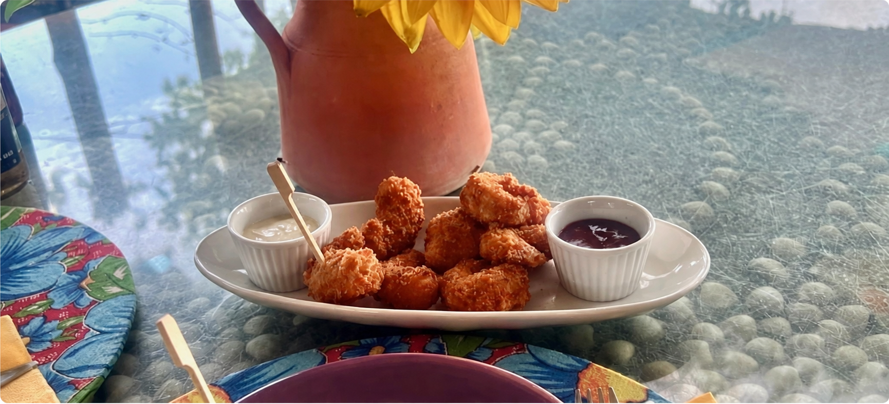

Um convite irresistível à contemplação
A Oásis Galinhos fica em frente ao mar, o que, por si só, já traz sensações de leveza, calma e o sentimento de liberdade, além de garantir um relaxamento profundo. A brisa fresca que sopra à beira mar envolve a todos com seu manto suave, oferecendo uma experiência sensorial inigualável. Com esta vista belíssima, o ambiente rústico e incrivelmente aconchegante é uma mistura perfeita de conforto, tranquilidade e muita, muita paz!
A pousada resgata aquele ESPÍRITO DE ACOLHIMENTO, com funcionários gentis, que dão dicas da região e faz você sentir-se em casa. O lugar tem um estilo próprio, com ênfase no atendimento afetivo e serviço individualizado, um contraponto aos grandes hotéis impessoais e que estão se tornando cada vez mais comuns nos tempos de hoje.
.jpeg)
.jpeg)
.jpeg)

Feita de luzes e cores
Imersa no azul do céu e no esverdeado do mar, a Oásis Galinhos é uma pousada privilegiada com as pinceladas da natureza. Como o ambiente é todo ele aberto, os primeiros raios de sol nos encontram já no café da manhã, expandindo uma aura de energia única que se estende até que o dia se despede dando lugar aos tons quentes e avermelhados do crepúsculo, banhando a pousada inteira.
Mas é à noite, quando abajures e luminárias repercutem ainda mais a sensação de fluidez e suavidade, que ela ganha novos contornos, refletindo, na imensidão de um mar a perder-se de vista, os barcos ancorados diante de nós. E de repente tudo fica especialmente mágico, lembrando um CENÁRIO DE FILME.
As acomodações são simples, confortáveis, e apresentam uma elegância natural.
Como em Galinhos não tem água doce — elas são salobras — a pousada disponibiliza, em todas as acomodações, um galão acoplado no box para uma ducha final com água mineral.
A decoração é uma bela forma de homenagear a cultura local, levando personalidade a cada suíte e chalé. Essa valorização regional também faz-se presente no restaurante — que está mais para bistrô — e cujos pratos são um tributo a personagens galinhenses, como o NENÉM — ESPAGUETE COM CAMARÕES AO MOLHO CÍTRICO, que nós pedimos, e, confesso, uma das melhores massas que já experimentamos nesses 15 dias pelo Nordeste.
Vale destacar que o restaurante é REFERÊNCIA NA GASTRONOMIA LOCAL, especialmente pelos pratos portugueses criados pela proprietária, Clara Machado.
A pousada oferece piscina e jacuzzi de hidromassagem, de onde é possível contemplar o pôr do sol até as estrelas roubarem a cena. Ah, tudo isso com vista para o mar. Eu e meu marido tivemos o privilégio de usufruir deste momento, e ainda por cima, para completar, na companhia de um casal maravilhoso: a lua e o silêncio.
.jpeg)
.jpeg)


.jpeg)
 Gato Freitas: o fiel escudeiro
Gato Freitas: o fiel escudeiro.jpeg)
.jpeg)
.jpeg)